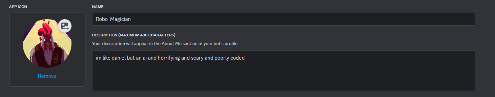

What's all this about?
Well since im mostly a developer and am currently studying computer science, it's only fair that i update this website with my progress and projects.
I try to keep everything as open source as possible, and everything on here can be seen on my personal github
yes its trash coding practice, and no, i really don't care
my github also includes the code to this website itself, including all assets. so if you like any images or music in the background.
go ahead and use them. i didn't make them i just stole them from pinterest (dont sue me this website makes no money and its taking resources from microsoft)
ROBO-MAGICIAN DISCORD BOT!!

This bot was my first ever real project as a solo developer, i wanted to learn how to use javascript before i had to deal with it raw in my classes
and hey, making a bot was fun. its like making a game without having to deal with the nighmare of using c++ :')
Its a relatively simple bot, at least compared to a ton of the others bot developed by teams
It has a couple of really fun features, including:
-
A rewarding gambling system that definetly results in hyper inflation
-
a shop filled with way too many inside jokes between my friends
-
a NSFW feature that shows extremely diabolical imagery simply because its funny to abuse your friends
with
This was certainly a learning process for me, there was a lot of debugging that i had to rigerously deal with. especially to do with the money system.
since the hosting i use for my bot is free, and rather unreliable. the bot would often just go offline for no real reason, and this would cause a loss of everyone's inventory and cash
to fix this, in my divine wisdom, i didnt use a linked database or anything of the sort. instead, just used raw text files.
this worked for a while, until someone pointed out you could create a literal infinite money glitch by saving your money, gambling, and if you lost, you could just reload your lost money
this was a pain the ass for several reasons, mostly because i had to upend my entire backend logic to get it to work.
i had to instate an autosave feature, that a lot of the time just didnt work? or gave the wrong cash, or something. i dont even remember how i ended up fixing it
i was practically black out on sleep deperivation and enough caffiene to kill a small horse. but in the end, it works.
...
no matter how sphagetti my code ended up being.
the bot isn't near enough ready to go public unfortunately, firstly i need a better hosting system that i will probably end up making myself.
i refuse to pay for hosting (bless up github for hosting this website for me)
once the kinks have been ironed out, and hosting is consistent, i'll end up making it public for sure.
but until then, youll have no choice but to watch in awe of my creation ;)